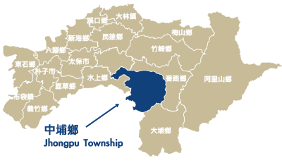
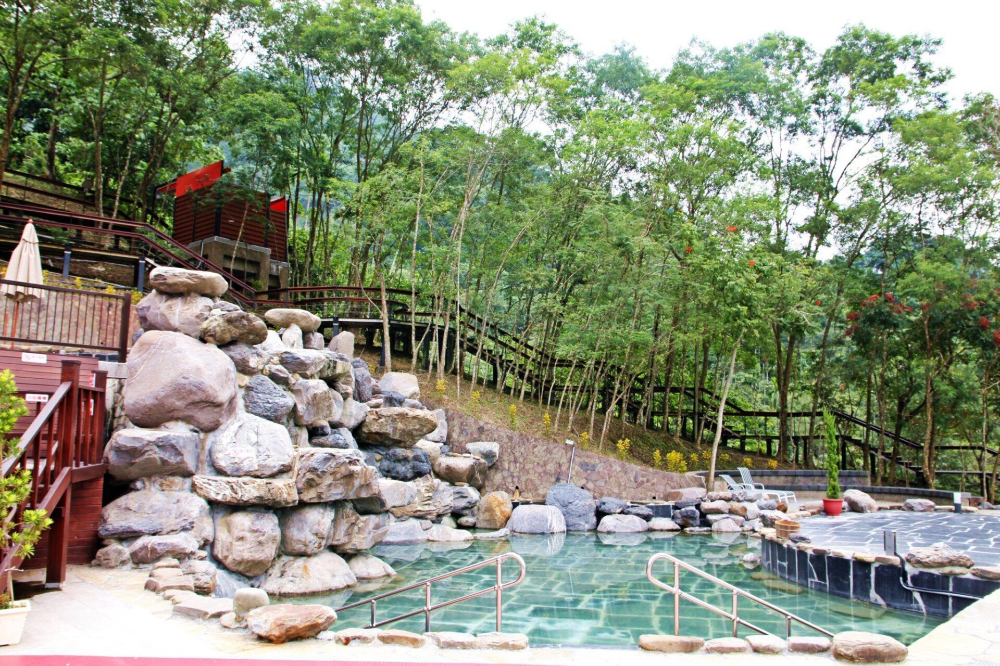

中源埔渡
關於中埔


嘉義縣中埔鄉東南連大埔鄉，南接臺南市白河區為界，緊鄰嘉義市，且中埔鄉位於阿里山山腳下，介於嘉義縣山區與平原之間。因此中埔鄉有許多戶外的景點，例如石硦林場。石硦林場內生態資源多樣而豐富，常見植物包括有多樣化的地被植物，還有蕨類、觀音蓮、桃花心木、樟樹、榕樹，也常見保育類大冠鷲、紫嘯鶇、五色鳥，沿著登山步道皆可觀賞林場內豐富的自然生態。
中埔鄉內有嘉義縣唯一的溫泉區，中崙溫泉位於嘉義縣中埔鄉中崙村，泉源有新、舊兩處，舊泉源位於離河床百公央高的山腰上，中崙溫泉泉質屬鹼性碳酸泉，與關子嶺溫泉相似湧泉含豐富的碳酸鈉，但是其因含泥量較多，觸感頗為滑溜，中崙溫泉具有美容、潤滑肌膚、筋絡保健等特性，因而有「台灣美人湯」之稱。
中埔曾經是檳榔的最大宗產地。不過，近年來的中埔極思轉型，改為培育健康養生的靈芝。如今中埔成了靈芝代言人。同屬菇類的木耳，亦佔全國產量的四分之三。因此近年中埔鄉的蔬菜、果樹、特作、花卉、菇類等農作物種類多元，且以黃金板栗、黑木耳等特產聞名。